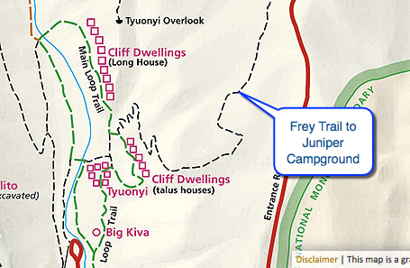
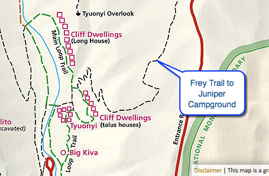

Hike New Mexico
w/ Tom & Ken
Frey Trail Hike
| Difficulty | Round-trip | Type | Elev. Chg. | Exposure | Wow Factor | Facilities | Seasons | Flickr | By Car |
|---|---|---|---|---|---|---|---|---|---|
| Moderate | 3 miles | Out-and-back | 550 ft | Full sun | Views en route | Visitor Center | All | Album |  |


 

- Mar 26, 2015: Departing from the Main Loop
- Mar 26, 2015: Frijolito's steep beginning across the way
- Mar 26, 2015: Looking across canyon towards the Frijolito trail down
- Mar 26, 2015: Canyon wall surround you as you climb
- Mar 26, 2015: The view above changes perspectives
- Mar 26, 2015: The ascent proves worthwhile
- Mar 26, 2015: Mostly the same towards Juniper Campground
- https://www.flickr.com/photos/139088815@N08/27593738046/in/album-72157667010406084
- https://www.flickr.com/photos/139088815@N08/27350091970/in/album-72157667010406084
- https://www.flickr.com/photos/139088815@N08/27593693706/in/album-72157667010406084
- https://www.flickr.com/photos/139088815@N08/27018515003/in/album-72157667010406084
- https://www.flickr.com/photos/139088815@N08/27554535581/in/album-72157667010406084
- https://www.flickr.com/photos/139088815@N08/27018473363/in/album-72157667010406084
- https://www.flickr.com/photos/139088815@N08/27593673926/in/album-72157667010406084
The Frey Trail breaks from the Main Loop Trail and quickly ascends the canyon walls to the mesa top, and then on to Juniper Campground. The most scenic part of the trip is the ascent, though the views of the Sangre de Cristos on top are also quite lovely. Looking back into the canyon provides some great views of the ruins, and across the canyon, the ascending and descending portions of the Frijolito Loop Trail can be seen quite clearly.